MyCrib
MIX301, Universitetet i Bergen Pågår
- Min rolle
- Designer, med hovedansvar for det visuelle, designsystemet og brukerflyten
- Team
- Gruppeprosjekt i MIX301
- Verktøy
- Claude Code, Figma, Figma MCP, Figma AI, Claude, ChatGPT
- Periode
- Høst 2026 (pågår)
- Status
- Under arbeid.
Beskrivelse
En mobilapp der du chatter med en AI om ditt eget rom, like enkelt som å sende et bilde til ChatGPT. Forskjellen er at AI-en kjenner målene på rommet, så rådene stemmer når du skal kjøpe.
Kontekst
MyCrib er en høyoppløselig prototype vi lager som gruppe i masteremnet MIX301, som handler om AI-assistert design og utvikling. Jeg er designer i gruppa, med hovedansvar for det visuelle uttrykket, designsystemet og brukerflytene.
Målet i dette prosjektet var ikke å undersøke og teste med flest mulig brukere. Målet var å finne ut hvordan AI kan brukes gjennom en hel designprosess, fra idé og designsystem til fungerende prototype, og hvordan jeg som designer kan få farten fra AI uten å gi fra meg kontrollen over designvalgene. Prosjektet pågår dette semesteret, så casen er ikke ferdig.

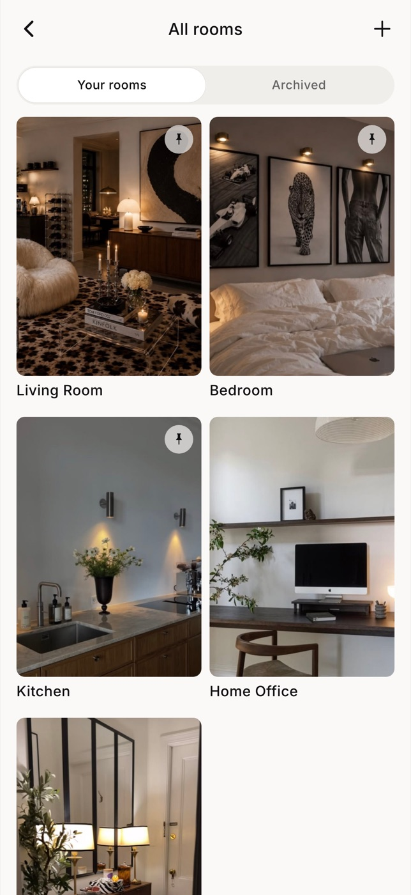
Utfordringen
Hvordan kan det bli like enkelt å få hjelp til interiøret som å sende et bilde til ChatGPT, men med riktige mål?
Problemet og muligheten
Målgruppen var førstegangskjøpere mellom 20 og 35 år med stramt budsjett og lite interiørerfaring. For dem er det vanskelig å vite om et møbel får plass og om rommet henger sammen som helhet, og et feilkjøp er dyrt.
Det vi fant, var at mange allerede bruker ChatGPT, og at de er glade i det. Det er enkelt: man tar et bilde av rommet og et av møbelet, og får tilbake noe som ser ekte ut og har riktig stemning. Problemet er at ChatGPT ikke kjenner rommet. Den endrer størrelsen på møbler, bytter materialer, flytter vegger og glemmer det man sa i forrige runde. Bildet ser overbevisende ut, men man kan ikke stole på det når man skal kjøpe.
Muligheten lå i å beholde det folk liker med ChatGPT, den lave terskelen og det realistiske uttrykket, og legge til det som mangler: rommets faktiske mål og en AI som bruker dem.
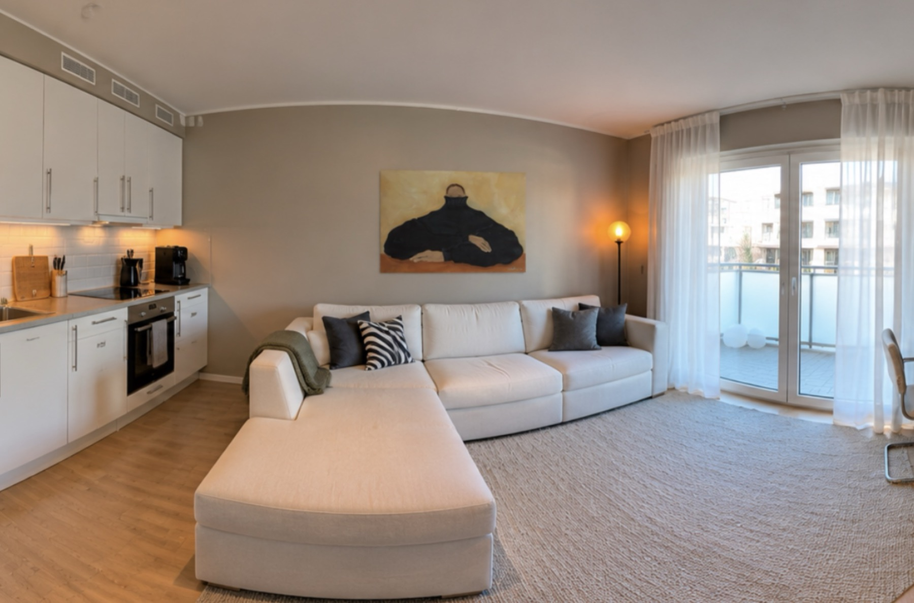
Stuen min, redigert av AI. Den endret sofaen og lampen, og la til noen rare ventiler i taket ved kjøkkenet.
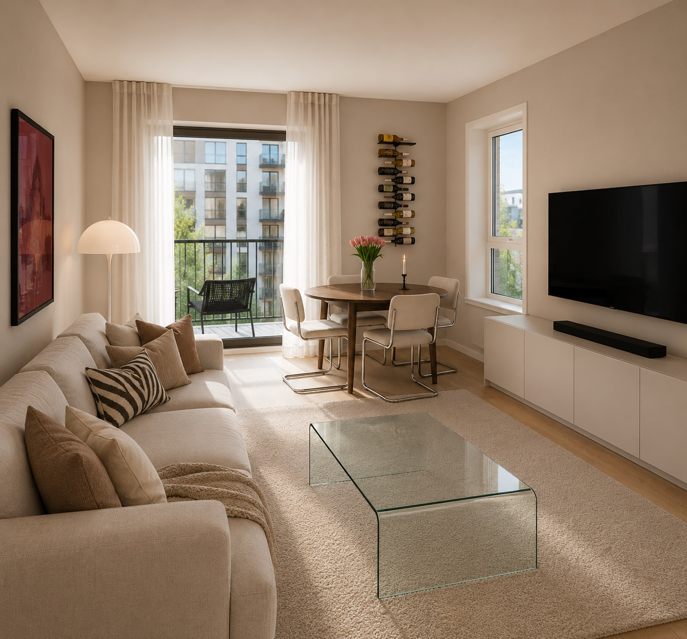
Generert av ChatGPT slik den oppfattet rommet fra bildene fra visningen. Den la til en vegg der det egentlig er en dør, endret sofaen og komprimerte rommet mer for hver iterasjon.
Research og innsikt
Intervjuer og spørreundersøkelse
Gruppa intervjuet tre personer med ulik erfaring med å innrede, og gjennomførte en spørreundersøkelse om å innrede sin første bolig, med 27 svar. Vi analyserte svarene tematisk: sitater og svar ble kodet og gruppert til tema, og vi så etter steder der dataene pekte i ulike retninger. Utvalget er lite og skjevt, mest unge kvinner som er vant med AI. Det var et bevisst valg, siden fokuset dette semesteret var å utforske designprosessen med AI og ikke brukerinnsikt. Funnene ga derfor retning, ikke fasit.
Fra funn til designvalg
Bare 5 av 27 sa at mål var det vanskeligste, men usikre mål var den vanligste grunnen til skepsis. Vi tolket det som at mål er en terskel for tillit. Løsningen måtte derfor være like enkel som ChatGPT, og samtidig vise hvilke mål rådene bygger på.
18 av 26
Bruker allerede ChatGPT til interiør
«ChatGPT er egentlig veldig enkel å bruke, da du bare sender bilder.»
Chatten er hovedinngangen, og rom og møbler legges inn med bilder, skann eller en produktlenke. Brukeren trenger ikke vite hvilken funksjon som skal brukes.
11 av 27
Er skeptiske fordi målene kan være feil
«Lager rommet mye større som regel. Du tror du har plass til mer enn du har.»
Rommet har faktiske mål fra skann, plantegning eller egne mål, og kan vises som plantegning med centimeter. Har brukeren bare lagt inn bilder, sier AI-en ærlig at den ikke kan måle fra et bilde.
2 av 3
Angret på møbler som var for store
Den ene brukte et år på å finne et teppe, og lånte med seg prøver hjem før det føltes trygt å kjøpe.
Brukeren kan legge inn et møbel med skann, bilde eller produktlenke og se det i sitt eget rom før det kjøpes.
Prosess
I bacheloren opplevde jeg at AI-en tok mange av designvalgene for oss. Det gikk raskt, men designet ble mindre vårt. I MyCrib ville jeg finne en måte å samarbeide med AI på der jeg fikk farten og automatikken, men beholdt kontrollen over hvordan produktet ser ut og oppfører seg.
Fra interiørapp til «ChatGPT for interiør»
Tidlig i prosjektet begynte konseptet å ligne en typisk interiørapp med mange funksjoner. Jeg foreslo heller å ta utgangspunkt i det som gjør ChatGPT så enkelt: man trenger ikke vite hva man skal trykke på, man viser bare hva man prøver å gjøre. Forskjellen skulle være at AI-en kjenner rommet, og derfor kan si fra om ting brukeren ikke tenker på, som at sofaen får plass, men at det blir for trangt å gå forbi.
Jeg testet ideen i en klikkbar lo-fi-prototype, bevisst grå og uten pynt, slik at det var flyten og ikke utseendet som ble vurdert. Gruppa valgte flyten fra dette konseptet som felles struktur for appen.
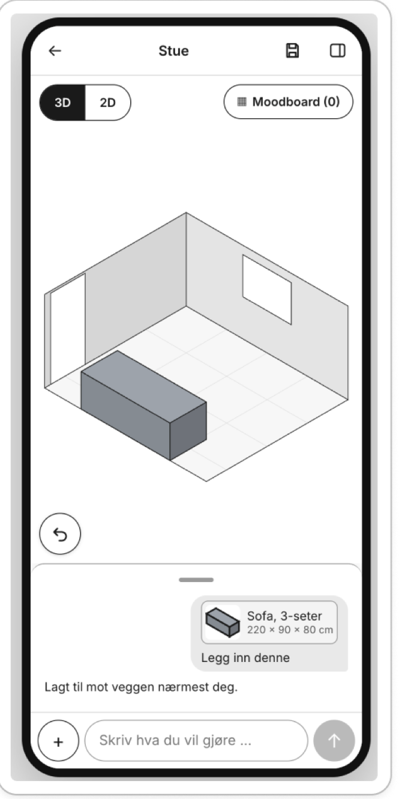
Designsystem og regler før AI-en bygger
Jeg la grunnlaget før AI-en fikk bygge noe. Designsystemet bygde jeg sammen med AI, men det var jeg som bestemte farger, typografi og komponenter, og det ble rammen AI-en måtte følge. Jeg skrev også faste regler for samarbeidet: det er jeg som tar de endelige valgene, større valg skal vises som alternativer, og designet i Figma og prototypen skal alltid være i takt.
Hele flyten i Figma, styrt med kommentarer
Da designsystemet var klart, valgte jeg å designe hele flyten i Figma før noe ble kodet, siden prosjektet handlet om å undersøke selve prosessen. Claude satte komponentene sammen i tre visuelle retninger, og etter at jeg hadde valgt, bygde den hele flyten på 33 skjermer.
Kommentarene ble den viktigste måten å styre på. En kommentar peker på nøyaktig det elementet jeg mener, så jeg slipper å forklare med ord hvor i systemet endringen skal gjøres. Når jeg tidligere har vibekodet, har AI-en ofte gjort endringen på feil sted fordi jeg ikke beskrev konteksten godt nok.
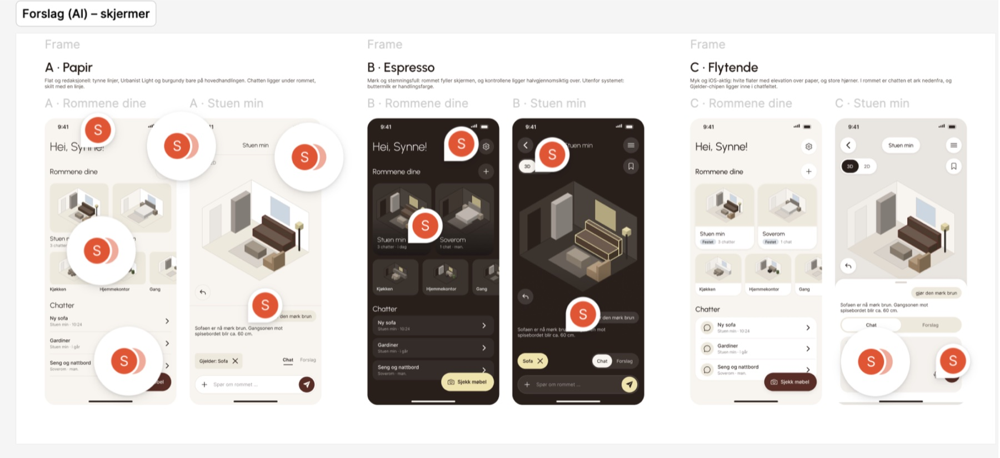
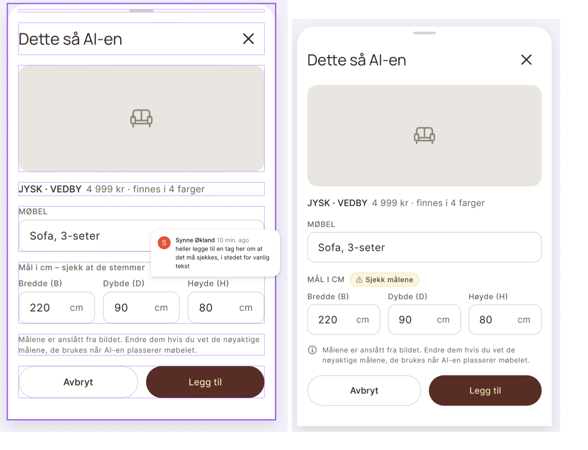
En ny visuell retning underveis
Etter de første rundene syntes jeg uttrykket ble for mykt og generisk, og byttet til en skarpere, mer moteinspirert stil. Fordi skjermene var bygget med komponenter og variabler, fikk hele prototypen den nye stilen på én gang.
Koden og designet i takt
Deretter ble designet bygget i kode med Claude Code, med farger, typografi og ikoner hentet direkte fra Figma. Flere endringer ble først bare gjort i koden, så jeg innførte en regel om at alt som endres i koden også skal endres i Figma. Slik var det designet som gjaldt, også når prototypen utviklet seg videre.
Løsningen så langt
Én ting går igjen i hele løsningen: AI-en gjør jobben raskt, men brukeren har alltid det siste ordet og kan rette målene, angre og velge selv.
Rommet som kontekst
Brukeren legger inn rommet med skann, plantegning, egne mål eller bilder, og kan starte med det som er for hånden. Bildene gir AI-en stemningen, farger, materialer og lys, mens skannet eller plantegningen gir den målene. Målene kan justeres etterpå, vegg for vegg.
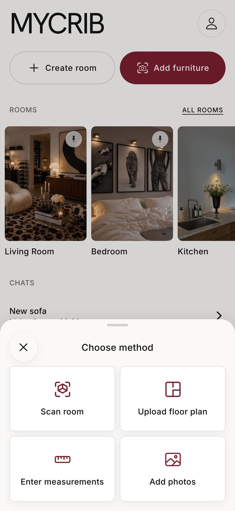

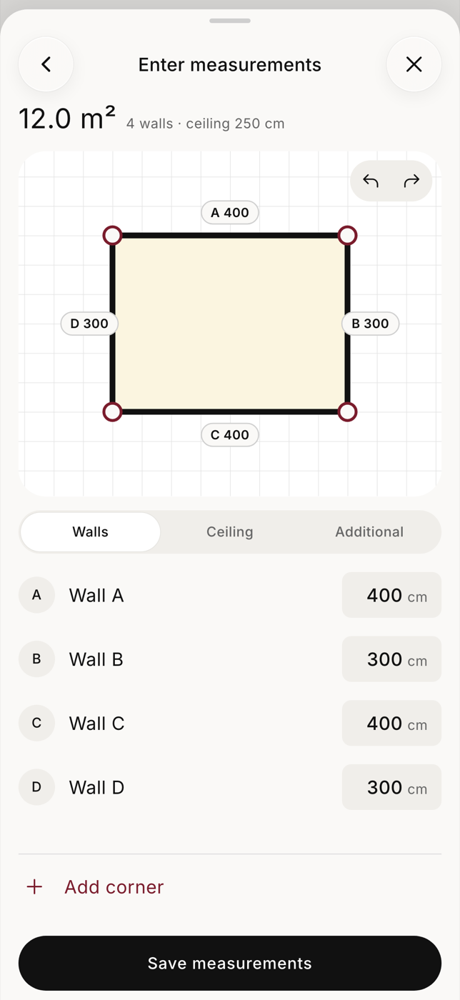
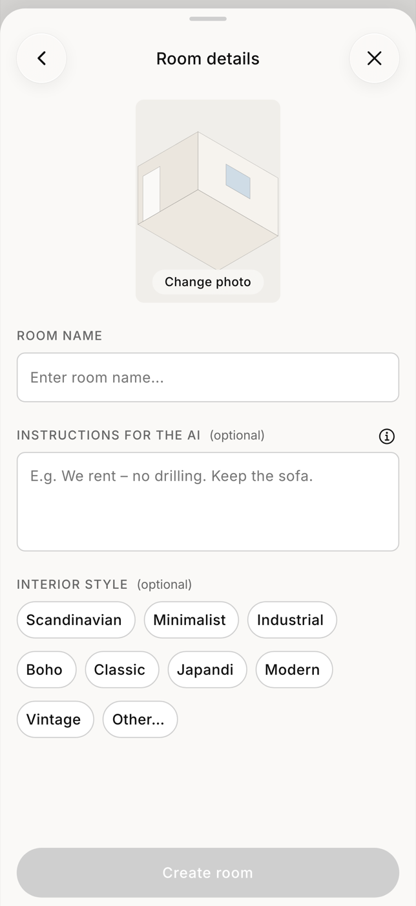
Møbelet med riktige mål
Møbelet legges inn like enkelt som i ChatGPT, med et bilde, en produktlenke eller en rask skanning. Etter skanningen viser «What the AI saw» hvilket møbel AI-en tror det er og hvilke mål den har registrert. Stemmer det ikke, retter brukeren målene eller trykker «Not this item?».
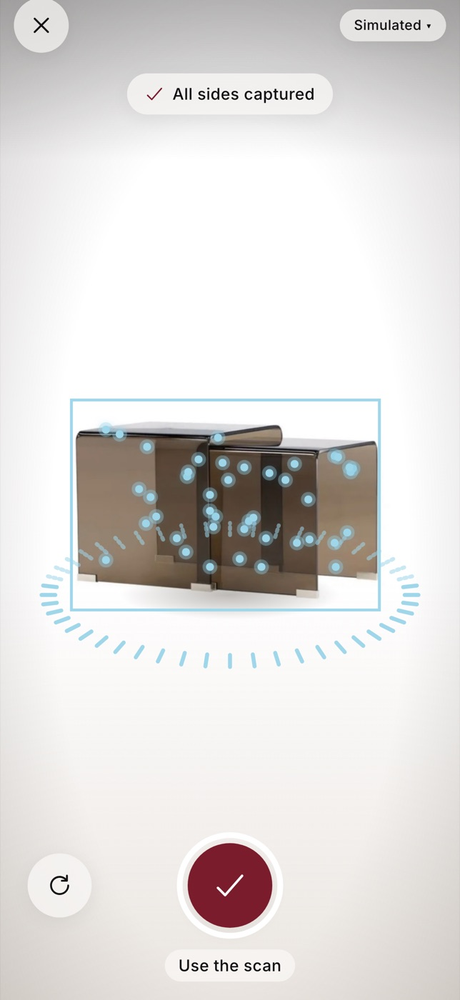
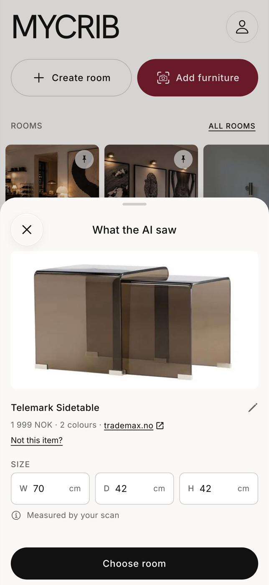
Brukeren har kontrollen
AI-en kan endre rommet, men brukeren kan alltid angre, lagre versjoner og gå tilbake til en tidligere. Chatten tar maks en femtedel av skjermen, så rommet alltid er i fokus.

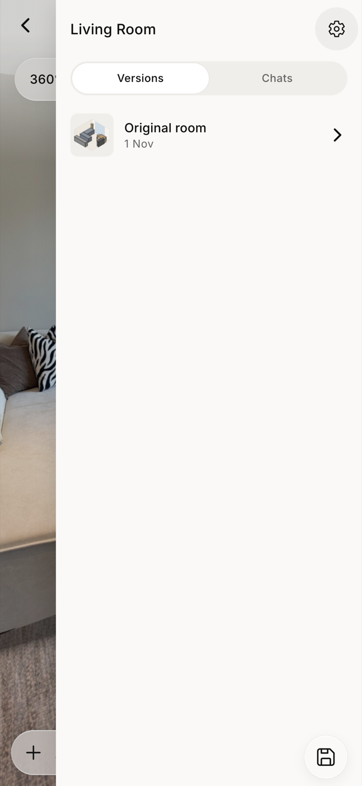
Tips når det passer
Ingen i intervjuene ville ha forslag hele tiden. De ville ha det mens de utforsker, ikke når de har bestemt seg. Retningen er derfor en AI som sier fra forsiktig, for eksempel at sofaen får plass, men at gangen blir for smal, uten å ta over.
Dette er ikke ferdig. I prototypen svarer AI-en med forhåndsskrevne svar, så rammene rundt samtalen kan testes før vi kobler på en ekte språkmodell. Hvordan og når AI-en skal komme med tips, er det vi jobber med nå.
Resultat så langt
Prototypen er bygget i React og TypeScript med eget designsystem, og designet i Figma og koden holdes i takt. AI-en i appen er foreløpig simulert med skriptede svar, og stua er lagt inn med en ekte 3D-skanning. Neste steg er brukertest av hi-fi-prototypen, der jeg blant annet vil undersøke om brukeren opplever at det er brukeren eller appen som bestemmer.
Oppgaven jeg skriver
Prosjektet er grunnlaget for eksamensoppgaven min i MIX301. I bacheloren laget KI-en hele designsystemet, og jeg opplevde å miste mye av kontrollen over designet. Nå undersøker jeg hvor kontrollen over designbeslutningene faktisk ble utøvd da jeg prototypet med en AI-kodeagent, og hvordan det skilte seg fra vibekodingen i bacheloren.
Jeg bruker mixed-initiative interaction (Horvitz, 1999) som teoretisk linse, altså samspillet mellom når mennesket og når systemet tar initiativet. Foreløpig ser jeg tre steder kontrollen ble utøvd: i etterkant, ved å reagere på det agenten hadde bygget, på forhånd, gjennom regler og struktur, og i forhandling, gjennom forslag, valg og en vei tilbake. Problemstillingen er ikke endelig.
Læring så langt
Det viktigste jeg har lært er at kontrollen over designet ikke kommer av seg selv når en AI-agent bygger. Den må bygges inn i arbeidsmåten, med et designsystem agenten må følge, forslag jeg velger mellom og regler som er skrevet før noe genereres.
Samtidig er en regel bare så god som min evne til å sjekke at den blir fulgt. Selv med regelen om at Figma og kode skal være i takt, fant jeg forskjeller senere. Å jobbe med en AI-agent har gjort meg mer til en som setter rammer, vurderer og bestemmer, og mindre til en som bygger alt selv.
Jeg ser også at de beste valgene kom når jeg brukte prototypen selv og la merke til det som skurret. AI gjør det raskt å lage noe, men det er fortsatt designerens jobb å avgjøre om det er riktig å lage.